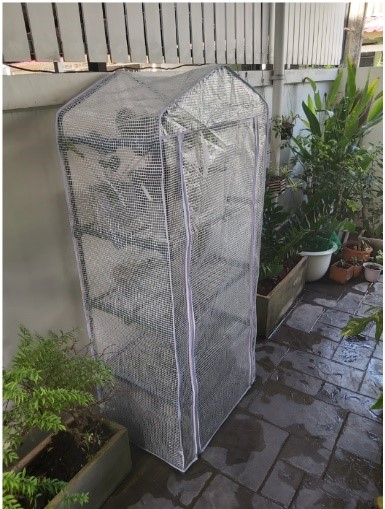

Overview
The project idea is an automated outdoor greenhouse for growing potted plants that require specific conditions to thrive. The project is aimed at the hobby gardening enthusiast with the goal
to simplify plant care though the automation of the greenhouse conditions to maintain an ideal growth environment. The greenhouse size is approximately 1m x 1m x 1.5m and its objective is to
be simple, of relatively low cost, can house a small amount of plants and is lightweight and portable so it can be relocated with ease into other areas of the garden or balcony.
Motivation
Since the solitude periods of the 2020 pandemic, many people have turned to hobbies around their home for entertainment. One of the areas of growth during this period has been urban gardening.
This is evident at the booming plant bazaars throughout Bangkok and the proliferation of online sellers. The most popular and valuable plants during this period are mostly ornamental and require
special care to maintain visual perfection on leaf, shoot and root growth with the slightest deviation ruining of hours of work. By automating the care process with inexpensive sensors,
an Arduino microcontroller and simple hardware to control watering, shading and ventilation, users can enjoy a constant state environment for their plants to thrive.
Description
Many plants species that are grown as a hobby are chosen because of their popularity and rarity. This is mostly because they are not commonly available in the local environment and are sourced
from overseas or from another part of the country. The difficulty to overcome is that local environmental conditions may not be optimal for their growth and therefore extra care is needed maintain
their specific requirements for a visually appealing foliage of leaves, shoots, and rot free roots. Additionally, free space around the home that can be used for growing plants may be subjected to
extremes of sunlight or shade that are unfavourable. This is where a controlled environment offered by an automated greenhouse can be a solution. It can take the narrow range of plant species
suitable for the local environment and create a larger window of optimal conditions allowing for the inclusion of a greater variety of plant species to be grown. This can be achieved by tailoring
the conditions in the greenhouse specifically to the plant’s requirements. Additionally, potted plants can be cycled through the greenhouse as a nurturing boost before being placed back into
areas where they can have maximum viewing pleasure.
The focus on the product is not so much on the overall greenhouse structure due to a large variety of small, cheap, and portable versions already available on the marked. The product is an
additional unit that can be placed inside a prebought greenhouse, connected to a power and water source, and create a stable environment tailored to the user’s requirements.
Through automation, the greenhouse will measure the conditions inside the greenhouse such as air temperature, humidity, soil water and nutrient content and temperature and apply resources as
required to maintain a predetermined condition. Soil moisture content is achieved by timing the opening a sprinkler in the early morning or evening as required to increase moisture but not humidity.
Humidity is controlled by opening a sprinkler during the warmer parts of the day or turning on a ventilation fan. Temperature is controlled by operating a heating lamp or fan, and lighting is
controlled by manipulating a shade blind. Soil nutrient content could also be available however the sensor would have to be manually moved from pot to pot. For simplicity, these features can
be added or removed as components.
The automation of these processes also allows for the capacity to capture and display data which enables the user to begin with a benchmark and then experiment with different conditions to
find optimal growth. This information could also be shared with other users of similar systems and open discussions related to best practice or find solutions to remedy problems. Further
expansions could be related to web based, monitoring, control, and forum discussion.
While the options for variations to parameters are nearly endless, it could include pre-installed settings allowing it for plug and play which would make it more commercially appealing.
Condition settings could also be manipulated by enthusiasts to achieve a better outcome or grow a larger variety of species.
Tools and Technologies
The automated greenhouse is based on commonly available and inexpensive kit form greenhouses available at most big box hardware outlets or online retailers at a low cost. The size is based on the
popular 1m x 1m x 1.5 model and could be scaled up slightly to accommodate larger models available such as 1.50m x 1.50m x 1.95m, however retaining a small footprint and portability is a key
objective.
To monitor the conditions inside the greenhouse, readily available low-cost sensors will be used to measure soil moisture content, humidity, light, soil nutrient content and temperature.
The sensor data will be inputted to an Arduino Uno which will then be used to control some simple relays / stepper motors which will switch a fan, water pump, and a heating lamp.
Skills Required
The bare greenhouse is commercially available unit that requires little skill and a short amount of time, the additional features intended for the project are based on the integration of several
component projects aimed at IT students and enthusiasts. The Arduino and associated sensors and components are available online for little cost and while I have been interested in a project using
an Arduino or a Raspberry Pi for some time, my lack of experience is a large obstacle. However, there is a large amount of information available online for free and these products are aimed at
beginners. The project will require basic electronics knowledge for hardware setup to interface the sensor inputs with the Arduino and coding for Arduino to send and receive signals from sensors
to servos and switches. An anticipated issue is the soil moisture content will be sensing just one pot in the greenhouse and watering will be based on that one input and may not be a representative
of the condition of other pots.
Outcome
The outcome of a successful project would be a marketable product that could be produced relatively cheaply and allow small hobby gardens to be set up in a variety of small spaces. It could help busy people be involved
with gardening through a reduced time requirement. The data capture aspect could also help form a gardening community that was interested in a more structured approach that was results driven through benchmarking and
measurable improvements. There is also the possibility that it could be scaled to suit much larger applications.